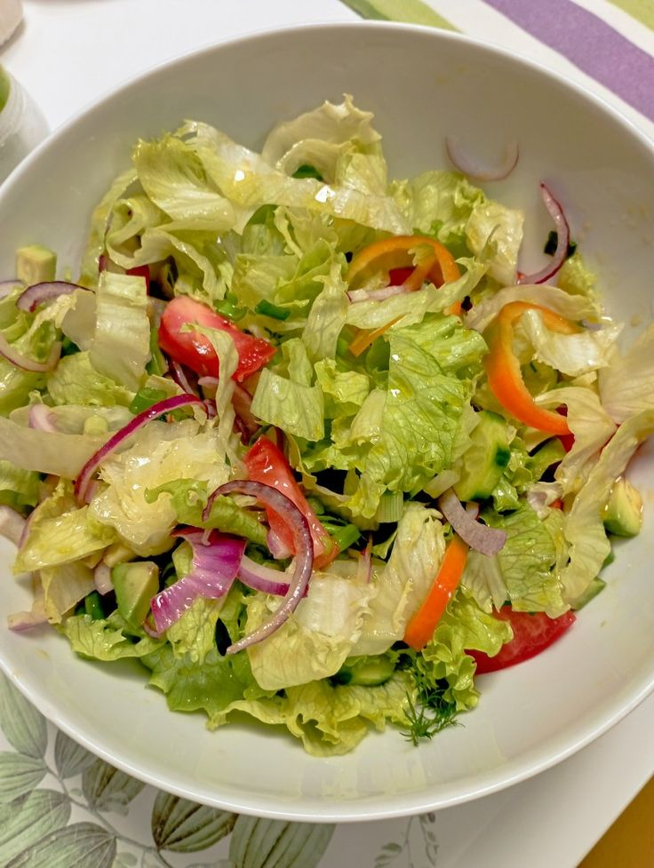

Fresh Vegetable Salad

Preparation Information
- Preparation Time: 15 minutes
- Cooking Time: 0 minutes
- Total Time: 15 minutes
- Servings: 3 people
- Difficulty: Easy
Ingredients
- 1 cup lettuce
- 1 cucumber
- 2 tomatoes
- 1 carrot
- 1/2 onion
- 1/2 cup cabbage
- 2 tablespoons mayonnaise
- 1 tablespoon lemon juice
- A pinch of salt
- A pinch of black pepper
Instructions
- Wash all the vegetables thoroughly.
- Cut the lettuce into small pieces.
- Slice the cucumber and tomatoes.
- Grate the carrot.
- Slice the onion and cabbage.
- Put all the vegetables in a large bowl.
- Add mayonnaise and lemon juice.
- Sprinkle salt and black pepper.
- Mix all the ingredients together.
- Serve fresh and enjoy!
Enjoy Your Fresh Vegetable Salad!
Your healthy vegetable salad is ready. Enjoy eating fresh and nutritious vegetables!